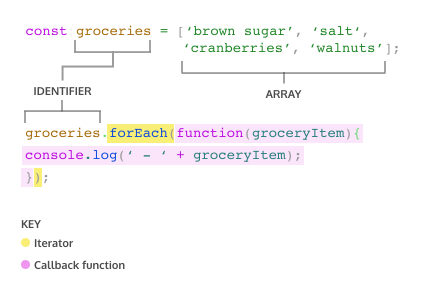

class: center, middle <img style="width: 100%;" src="/generation_logo.jpg"/> ##Higher-Order Functions and Iterators --- # Agenda ##1. Movement Exercise ##2. Array syntax Quizziz ###3. Higher-Order Functions ###4. Our friends the Iterators! ###5. .forEach(), .map(), .filter(), .every() examples and exercises ###6. Other iterators and methods ###7. Extra practice or Codeacademy --- class: center, middle <a href="https://www.nytimes.com/2022/05/24/well/move/joy-workout-exercises-happiness.html" target="_blank"><h2>Move for Joy!</h2></a> --- ##Functions are first class objects ###In JavaScript, functions are first-class objects, which means they can be: ###- stored in a variable, object, or array <br> ###- passed as an argument to a function <br> ###- returned from a function --- ##Higher-Order Functions ###A *higher-order function* is a function that either accepts functions as parameters, returns a function, or both! We call functions that get passed in as parameters callback functions. Callback functions get invoked during the execution of the higher-order function. -- ##We'll focus on passing functions as an argument to another function. This is used for iterator methods(which we will discover) and is more common than using a function to return another function. --- ###Example 1 Note that when you pass a function as an argument you do not put the parentheses! Parentheses call the function to act immediately. ```javascript //higher-order function function calculator(func, value){ return func(value) } function squared(num) { return num * num } function subtract10(num) { return num - 10 } calculator(subtract10, 20) // what's the output? ``` --- ###Example 2 ```javascript function formalGreeting() { console.log("How are you?"); } function casualGreeting() { console.log("What's up?"); } function greet(type, greetFormal, greetCasual) { if(type === 'formal') { greetFormal(); } else if(type === 'casual') { greetCasual(); } } // prints 'What's up?' greet('casual', formalGreeting, casualGreeting); ``` --- Example 3 ```javascript //first class function #1 function holidayMessage() { return 'Happy Holidays!' }; //first class function #2 function birthdayMessage() { return 'Happy Birthday!'; }; //higher-order function function sendMessage(greetingFunc, name){ const occasion = greetingFunc(); return "Dear " + name + ", " + occasion }; sendMessage(birthdayMessage, 'Chris'); ``` -- ## what value is returned when we call sendMessage at the bottom? --- ```javascript //inner function option #1 function holidayMessage() { return 'Happy Holidays!' }; //inner function option #2 function birthdayMessage() { return 'Happy Birthday!'; }; //higher-order function function sendMessage(func, name){ const occasion = func(); return "Dear " + name + ", " + occasion }; sendMessage(birthdayMessage, 'Chris'); ``` ###Dear Chris, Happy Birthday! --- ##Iterators Imagine you had a grocery list and you wanted to know what each item on the list was. You’d have to scan through each row and check for the item. This common task is similar to what we have to do when we want to iterate over, or loop through, an array. One tool at our disposal is the for loop. However, we also have access to built-in array methods which make looping easier. The built-in JavaScript array methods that help us iterate are called iteration methods, at times referred to as iterators. Iterators are methods called on arrays to manipulate elements and return values. -- ###for loop approach ```javascript const groceries = ['brown sugar', 'salt', 'cranberries', 'walnuts'] for ( let i=0; i < groceries.length; i++ ){ console.log(' - ' + groceries[i]); }; ``` --- ##.forEach() ###Calls a function for each element in the calling array.  --- ###Functions that are passed as arguments are often written in line using function expressions- in particular anonymous or arrow functions --- ###Function expressions- Anonymous and Arrow syntax revisited ```javascript // Anonymous Function (function (a) { return a + 100; }) // Arrow Function Break Down (a) => { return a + 100; } // 2. Remove the body braces and word "return" — the return is implied. (a) => a + 100; // 3. Remove the argument parentheses a => a + 100; ``` --- ##.forEach() example with arrow function ```javascript const groceries = ['brown sugar', 'salt', 'cranberries', 'walnuts'] //anonymous function groceries.forEach(function (groceryItem) { console.log(' - ' + groceryItem) } //arrow function groceries.forEach(groceryItem => console.log(' - ' + groceryItem)) //both print: // ' - brown sugar' // ' - salt' // ' - cranberries' // ' - walnuts' ``` --- class: center, middle <a href="https://www.youtube.com/watch?v=E2GawbHDFfs&t=198s" target="_blank"><h2>forEach() video</h2></a> --- ##.forEach() challenge ###make a forEach() loop on the array to console.log each value in the array multiply (*) by 2. Pass the argument as an arrow function. ```javascript const numbers = [5, 4, 2, 8]; for (let i; i < numbers.length; i++) { console.log(numbers[i] * 2) } ``` ##???? -- ```javascript numbers.forEach(num => console.log(num * 2); ``` --- ##.map() ###The map() method creates a new array populated with the results of calling a provided function on every element in the calling array. ```javascript const array1 = [1, 4, 9, 16]; // pass a function to map const map1 = array1.map(x => x * 2); console.log(map1); // expected output: Array [2, 8, 18, 32] ``` -- ###how many times does map() loop through the **array1** ? ###what is 'x' in this code? In each loop what is the value of x? --- ##.map() exercise ```javascript const names = ['Sam', 'Greg', 'Layla', 'Tom', 'Sasha', 'Samantha']; let lower_case = []; for (let i=0; i < names.length; i++ ){ lower_case.push(names[i].toLowerCase()); }; console.log(lower_case); ``` ##try writing this with a map() method! -- ### lower_case = names.map(name => name.toLowerCase()) --- ##.filter() ###The filter() method creates a new array, filtered down to just the elements from the given array that pass the test implemented by the provided function. -- ```javascript const words = ['spray', 'limit', 'elite', 'exuberant', 'destruction', 'present']; const result = words.filter(word => word.length > 6); console.log(result); // expected output: Array ["exuberant", "destruction", "present"] ``` --- class: center, middle <a href="https://www.youtube.com/watch?v=4_iT6EGkQfk" target="_blank"><h2>.filter() with Mosh</h2></a> --- ##.filter() exercise ```javascript function evensOnly(arr) { return // your code here using .filter() method } console.log(evensOnly([3, 6, 8, 2])); /// [6, 8, 2] ``` -- ### return arr.filter(num => num % 2 === 0); --- ##.every() ###The every() method tests whether all elements in the array pass the test implemented by the provided function. It returns a Boolean value. ```javascript const array1 = [1, 30, 39, 29, 10, 13]; const isBelowThreshold = (currentValue) => currentValue < 40; console.log(array1.every(isBelowThreshold)); // expected output: true ``` --- ##Other iteration methods ###.reduce() The reduce() method runs a function on each array element to produce (reduce it to) a single value. ###.findIndex() The findIndex() method returns the index of the first array element that passes a test function. ###.some() The some() method check if some array values pass a test.